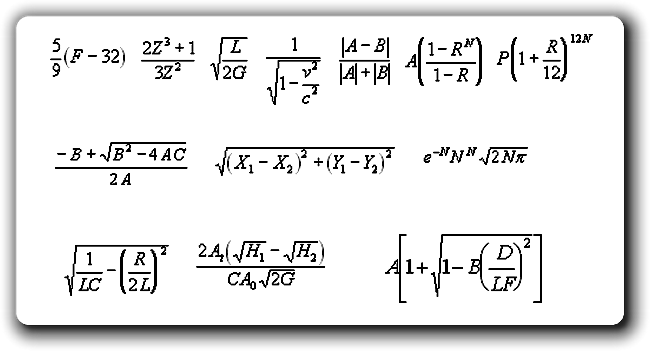
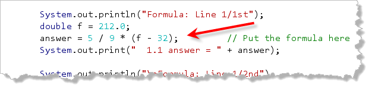
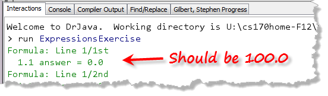
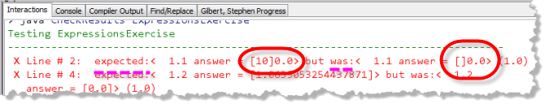
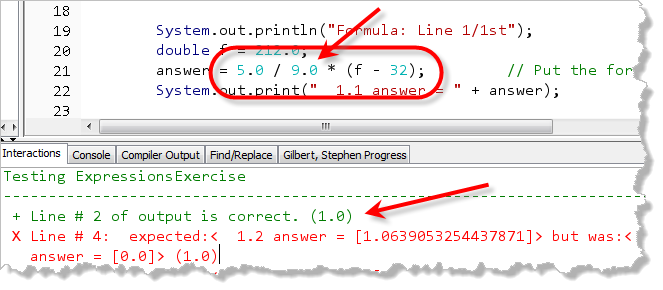
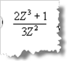

Now that you know a little bit about converting mathematical formulas into Java expressions, let's put this concept to work?
These programs are based on the ExpressionTest program used by Rich Pattis and Norm
Jacobson for UCI's ICS 21 course. Open the ExpressionExercise program in DrJava, then
compile, run it and Check it. Now, look
at the following picture:

As you can see, it contains 13 formulas on three different lines. The first line has seven, while the second and third lines each have three.Your job is to translate each of these mathematical formulas into the equivalent Java code, and then Check the program to see if you've done it correctly. To get started, I'll help you with the first formula.
Fahrenheit to Celsius
The first formula shown here asks you to convert Fahrenheit to Celsius. This should be pretty simple. Try it out. Put your formula in the source-code like this:

Then, compile your code and run your program.
Compare the expected output to the actual value calculated by your formula.OOPS!!!
Of course, most of you caught the error when I made it right?
While the expression 5 / 9 is perfectly OK in
algebra, in Java it is entirely different than 5.0 / 9.0,
which is what the formula actual expects.
Checking
The only problem is, what if you don't know what the answer
is supposed to be?. That's where the Check program
comes in. Run Check and you'll see:

Notice that when a checked line fails, it shows you both what was expected and what was actually printed.- In both cases, it inserts brackets around the portion that didn't match.
- A set of empty brackets (like we have in the was portion of the example here, shows that something was supposed to be printed but is missing in the output.
- If there are a set of empty brackets in the expected portion, it means you have printed something that was not supposed to be shown.
Go ahead and fix the code, changing the formula to 5.0 / 9.0
and you'll see that the program checks correctly.

Other Calculations

Now, look at the next formula. As you can see, it involves the variableZ, both cubed and squared. There
are two ways you can handle this: using simple multiplication
like this:
2 * (z * z * z) + 1
Or, by using the Math.pow() function like
this:
2 * Math.pow(z, 3) + 1
Of course, for powers greater than 3, (such as the sixth and
seventh formulas in this problem set), you'll always want
to use the Math.pow() function instead of using
simple multiplication.
Because of the nature of floating-point numbers, your answer may be slightly different than the expected answer. In this case, the last digit (or two) of the answer may vary depending on the order and type of your calculations. In a test situation, I always allow a little "fudge factor" to take this into account.
For the third and fourth formulas (and for many of the
others as well), you'll need to use the Math.sqrt()
function. You'll need to use Math.abs() for the
fifth formula, and the constants Math.PI and
Math.E for the last formula in the second row. Also,
even though you can use Math.exp() to solve this problem,
please use Math.pow() instead. There is a small difference
in the results using these two methods that my testing program cannot
check for.